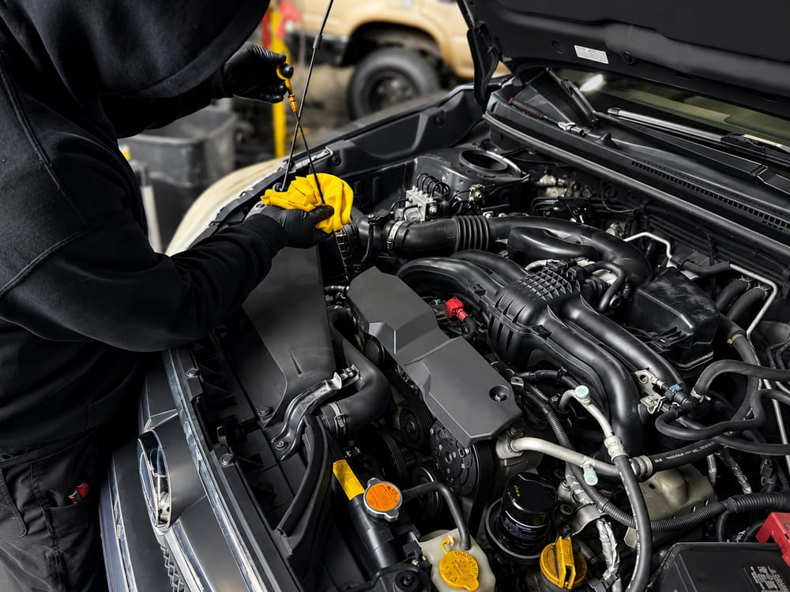

Every oil change at River City Autohaus comes with a full-service inspection, so small problems get caught while they're still cheap to fix.

A quick-lube chain changes your oil. We change your oil and put a trained technician's eyes on your brakes, belts, hoses, fluids, tires, and battery. Those are the parts that turn into breakdowns when nobody's looking. You get a simple report of what's good, what's coming up, and what can wait.
We follow your manufacturer's maintenance schedule. It's the same work the dealer does, just at independent-shop prices.
Federal law lets any qualified shop perform your maintenance without voiding the factory warranty. We document everything.
All your service records in one place, so nothing gets missed and resale is easier.
Most modern vehicles on full synthetic go 5,000–7,500 miles between changes; older engines and lots of short trips call for sooner. We'll set your interval based on how you actually drive, not a one-size-fits-all sticker.
Usually, yes. It protects better in cold starts, resists breakdown, and lets you go longer between changes. A lot of newer engines require it anyway. For older, high-mileage engines, a high-mileage blend can be the smarter buy.
Absolutely. The Magnuson-Moss Warranty Act protects your right to have maintenance done at any qualified shop. Keep your receipts, and we'll keep records on our end too.
Book your oil change and get a full vehicle health check with it. No upsells, ever.
Call (503) 867-0609